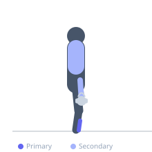
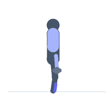

Exercise guide / Farmer's Walk on Heels
Farmer's Walk on Heels
A farmer's carry variation performed entirely on the heels, with the forefoot elevated off the floor throughout the walk. This unusual position forces sustained contraction of the tibialis anterior and ankle dorsiflexors while simultaneously loading the grip and core through the weighted carry. Used in tibialis anterior rehabilitation, shin splint prevention, anterior compartment strengthening, and foot drop recovery programs. The loaded walking component adds cardiovascular and grip demand to the tibialis training.
Primary muscles
tibialis anterior
Secondary muscles
flexor carpi radialis
trapezius upper
Stabilizers
transverse abdominis
erector spinae
Equipment
Dumbbell (Fixed)
Optional
Kettlebell


Starting position
- Pick up a dumbbell or kettlebell in each hand. Rise onto the heels by pulling the toes and forefoot up into dorsiflexion, lifting the forefoot entirely off the floor.
Setup
- Begin unloaded to practice the heel-walking gait before adding implements. Choose a weight that allows heel-only contact for the entire carry distance.
Steps
- Step 1: Pick up the implements and immediately dorsiflex the ankles to raise the forefoot.
- Step 2: Walk forward entirely on the heels, with the toes and forefoot elevated throughout.
- Step 3: Keep the shoulders packed, core braced, and gaze forward.
- Step 4: Walk the prescribed distance, then lower the forefeet back to the floor safely before setting the weights down.
Coaching cues
- Pull the toes up hard and keep them up — the forefoot never touches the floor
- Walk tall — do not lean back excessively to put weight on the heels
- Feel the outer shin burning — that is the tibialis anterior at work
Breathing
- Breathe rhythmically throughout. The effort is sustained — do not hold your breath.
Range of motion
- Maximum dorsiflexion sustained throughout the carry. No forefoot contact.
Tempo
- Walk at approximately 1 step per second. Focus on maintaining dorsiflexion over speed.
Common mistakes
- Allowing the forefoot to contact the floor during the walk — the dorsiflexion must be sustained the entire distance
- Using too heavy a weight that makes maintaining the heel-only position impossible
- Leaning backward excessively to shift weight onto the heels
Safety
- This exercise requires good ankle dorsiflexion range — assess range before loading
- Avoid on slippery surfaces
- For foot drop rehabilitation, begin without weights and shorter distances
Training
- endurance: 1–4 reps
- endurance: 2–4 sets
- Rest: {'endurance': 60}